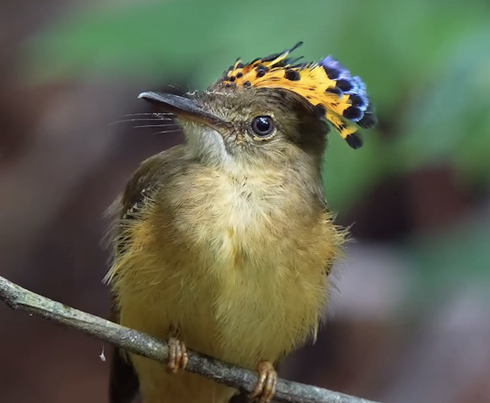
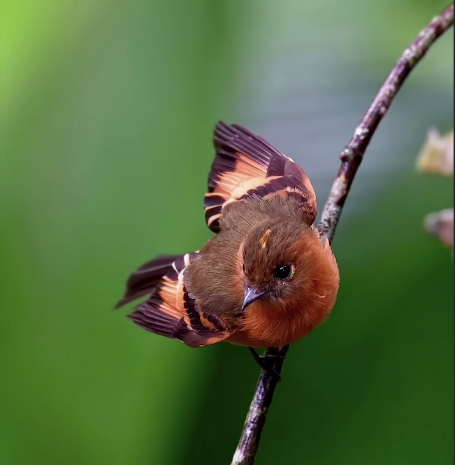

Serie
Royal Flycatcher
Una exploración del comportamiento y la espectacular cresta de esta especie. Horas de espera para capturar el momento exacto en que despliega su corona.
Ver serieUna selección de series fotográficas centradas en el comportamiento, la belleza y la diversidad de las aves.

Una exploración del comportamiento y la espectacular cresta de esta especie. Horas de espera para capturar el momento exacto en que despliega su corona.
Ver serie
Registro de la extraordinaria biodiversidad del Chocó ecuatoriano. Una de las regiones con mayor concentración de especies de aves en el planeta.
Ver serie
Instantes íntimos entre parejas de aves. Caricias, cuidados mutuos y lazos sociales capturados en su hábitat natural.
Ver serie